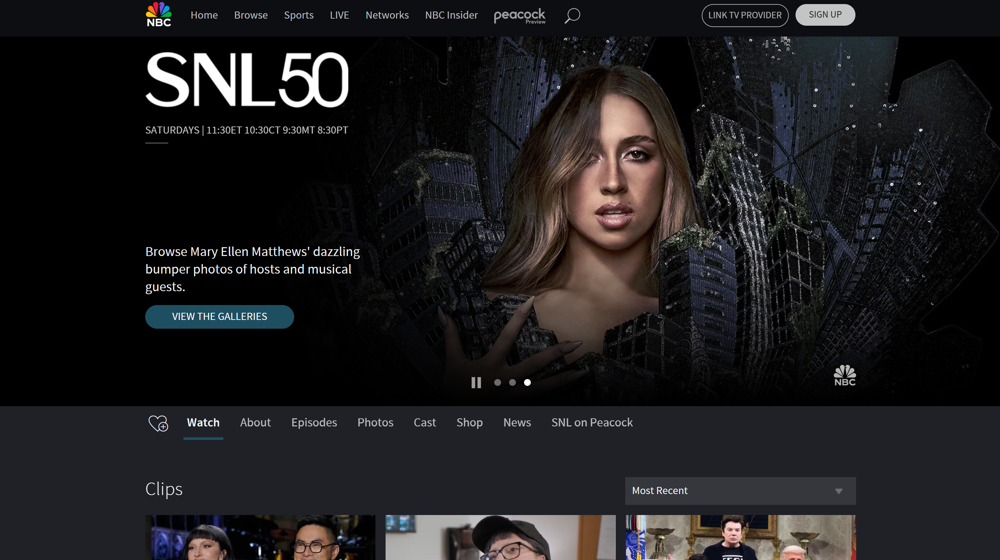
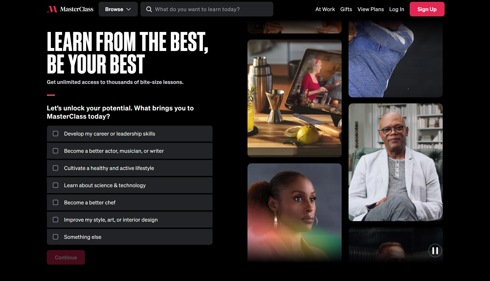

Dark mode was established alongside computing in its early days, popularized due to the increase in OLED screens and concerns about eye strain. Computers first offered dark mode as a default in the 1970s to reduce the amounts of light emitted from computer screens.
Dark mode is characterized by darker and often less saturated colors. While some dark-mode-based sites go full black and white, most avoid the harsh contrast since the point of dark mode is to be easier on the eyes. Instead, programmers opt to use greys in cool tones for a calmer and cloudier effect. Dark mode sites also tend to look more modern and streamlined nowadays, sticking to simplistic and often large elements.
Examples of Dark Mode in WebsitesReddit is a great example of a website that is primarily used through dark mode. The background of the site is a dark tinted grey and the text is white/light de-saturated blue. The lack of additional colors means that none of the post images clash with the present color scheme.

Dark Mode Design is a website much like Wix or Squarespace that allows users to explore a variety of dark mode website templates and customs as examples for what the owner can code for their clients. Each website has a slightly different aesthetic, but still follows the general rules of dark mode. The website itself is dark mode, of course, and follows a very strict white-on-black design that allows each example image to take the spotlight.

Spotify is a classic example of dark mode web design. Spotify only uses dark mode as a design aesthetic, using only black, grey, and white with accents of green in their website and app. To match the clean aesthetic, Spotify also uses a sans-serif font family and simple shapes to create the elements of the website.

Although it isn't usually noticed, Saturday Night Live uses dark mode on their website, which fits with the night-life vibe of the show. SNL's version of dark mode is lighter than other examples, giving it a relaxed but still lively feeling. The website still follows many of the dark mode "rules" as it uses a sans-serif font family and a simple website outline.
Master Class uses a more modified version of dark mode, including a wider variety of fonts, some of which are not sans-serif. Master Class' website also includes a more animated homepage with a wider range of photos that include color, bringing up the energy. Nonetheless, the main colors are still black, grey, and white.
